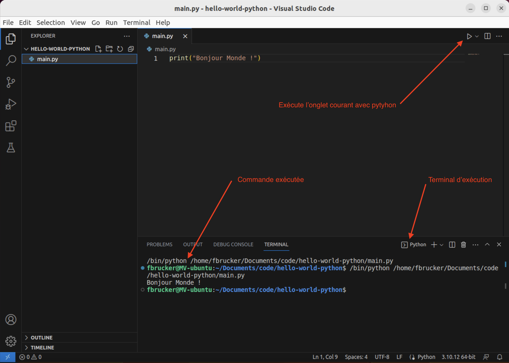

Vsc et python
Configuration de visual studio code pour le développement en python.
Extension python pour vscode
Documentation officielle de vscode consacrée à python
La principale extension à installer lorsque l'on fait du python est Python développée par microsoft. Il est également recommandé d'installer Pylance (utilitaire puissant d'aide au code).
Pour installer ces package :
Rendez vous dans la gestion des extensions de vscode, puis tapez python dans la barre de recherche. Assurez vous d'installer les packages créés par microsoft.
Premier programme
Nous allons créer un premier fichier de code python pour permettre de finaliser l'installation des liens entre l'interpréteur python et vscode.
À retenir
Avec vscode tout programme qu'on va coder doit dépendre d'un projet. Ce projet est un dossier dans lequel seront placés nos fichiers.
Ceci est important car cela permet à vscode de lier les fichiers du projet entre eux (pour les tests par exemple) et nous aider.
Créez un dossier nommé hello-world-python sur votre ordinateur, et ouvrez le avec vscode (menu Fichier > ouvrir le dossier...) pour le considérer comme un projet.
Une fois que vous avez dit que vous faisiez confiance au développeur de ce projet, fermez l'onglet Welcome. Vous pouvez même fermer l'explorer en cliquant sur l'icône en sur-brillance dans la barre d'activité de l'interface vsc.
Créez un fichier main.py (menu Fichier > nouveau fichier texte puis sauvez le immédiatement menu Fichier > Enregistrer).
Si vous n'avez pas encore configuré python, vscode va vous demander le faire.
Suivez les instructions de vscode (vous n'avez normalement pas grand chose à faire, vscode trouvera normalement les bons paramètres) pour faire le lien entre votre interpréteur python et lui.
Par défaut, si vous avez suivi les recommandations du cours pour installer python, vscode doit trouver l'interpréteur python :
/bin/pythonou/usr/bin/pythonsous Linux/usr/bin/python3sous MacC:\Users\fbrucker\AppData\Local\Microsoft\WindowsApps\python.exedans le compte utilisateur pour windows
Une fois la configuration terminée, écrivons notre code :
Écrivez dans le fichier ouvert dans vscode :
print("Bonjour monde !")Exécution du programme
- assurez vous d'être dans l'onglet contenant le fichier
main.pyde vscode - cliquez sur le triangle en haut à droite de la fenêtre pour exécuter le programme.
Vous devriez obtenir quelque chose du genre :

Pour exécuter du python, vscode écrit une ligne de commande dans un terminal. Nous expliciterons ces deux notions plus tard, pour l'instant admettez que l'exécution de notre programme s'est effectué dans une nouvelle fenêtre appelée terminal via l'exécution d'une commande.
Dans l'exemple précédent, la ligne de commande était :
/bin/python /home/fbrucker/Documents/code/hello-world-python/main.pyCe qui est avant la ligne de commande, c'est à dire fbrucker@MV-ubuntu:~/Documents/code/hello-world-python$ dans l'exemple précédent est appelé le prompt et est ce que le terminal met au début de chaque ligne avant que l'on puisse taper des commandes.
La ligne de commande d'un terminal est toujours composée de la même façon :
nom-du-programme paramètre-1-du-programme ... paramètre-n-du-programmeDans notre cas:
- nom du programme :
/bin/pythonQui est le chemin vers l'exécutable python - un unique paramètre :
/home/fbrucker/Documents/code/hello-world-python/main.pyqui est le chemin vers le fichier à exécuter
Pour connaître le python utilisé, il suffit de cliquer en bas à droite de la fenêtre de vscode. On voit tout les pythons connus :

Celui utilisé est précédé d'une étoile.